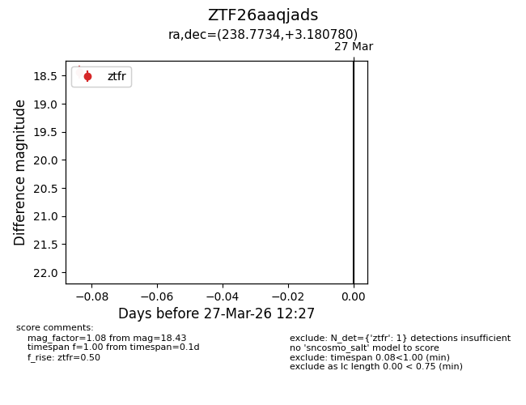
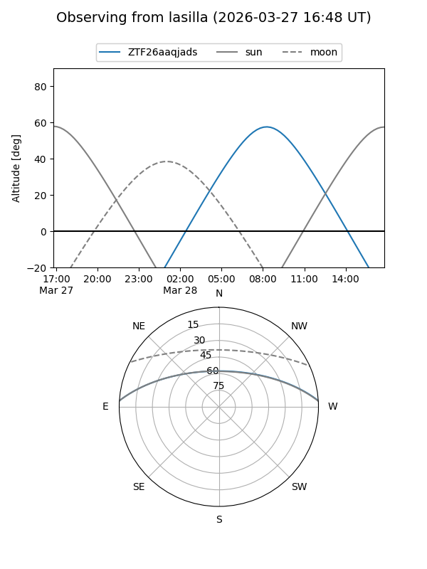
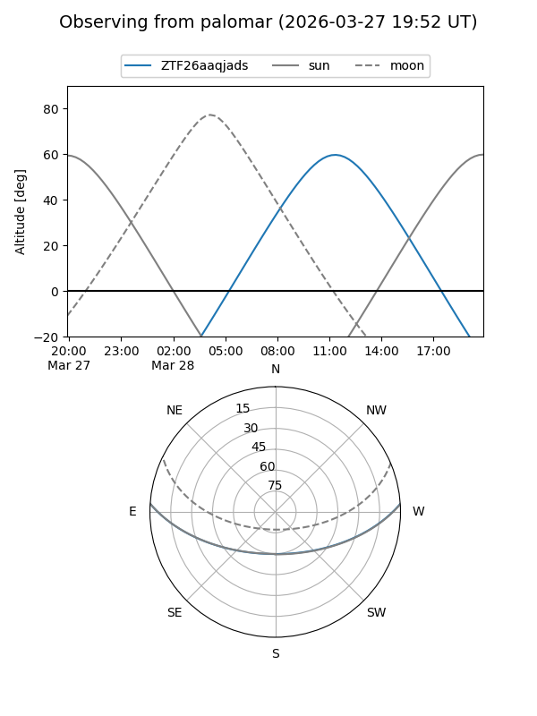

ZTF26aaqjads
Target ZTF26aaqjads at 2026-03-27 12:31
Aliases and brokers:
FINK: link
Lasair: link
ALeRCE: link
alt names
ZTF26aaqjads (ztf,fink_ztf)
Coordinates:
equatorial (ra, dec) = 238.7734,+3.18078
equatorial (HMS+DMS) = 15:55:05.61,+03:10:50.81
galactic (l, b) = (12.4860,+40.05674)
Flags:
Photometry:
last ztfr=18.43
1 ztfr detections
Lightcurve

Visibility


Additional plots